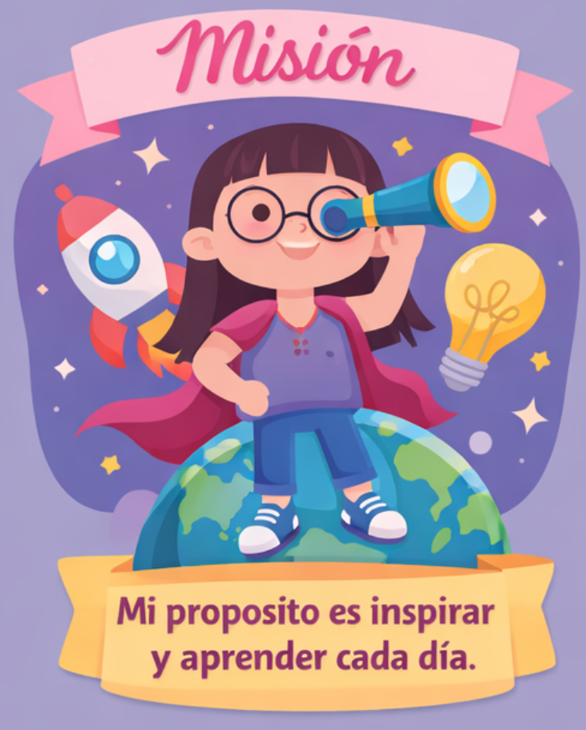
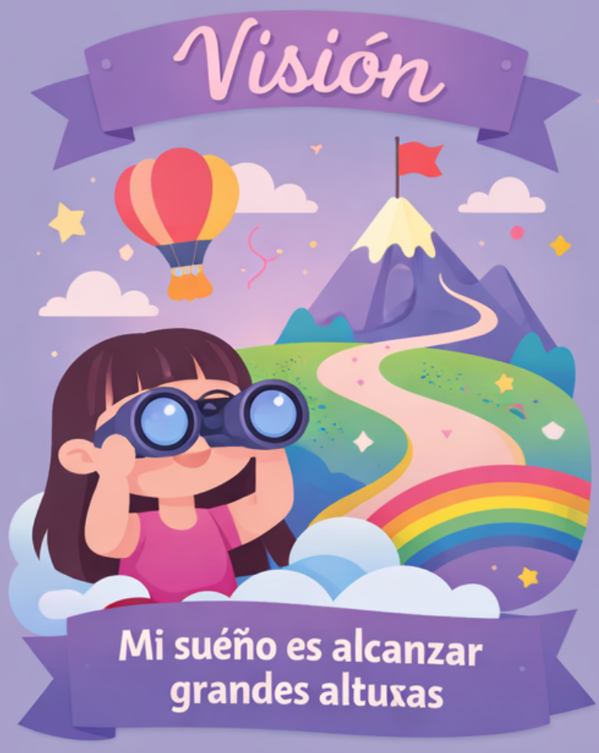
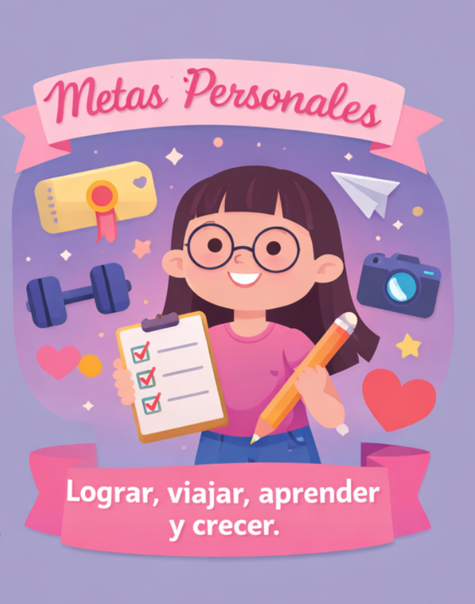

Misión
Mi misión es ser una persona consciente de sus virtudes y defectos, que busca superarse cada día a sí misma mediante el esfuerzo constante y el compromiso con su crecimiento personal, académico y emocional. Como estudiante, procuro ser responsable y dar siempre lo mejor en cada actividad que realizo, entendiendo que una calificación no me define como persona, pero sí me permite reconocer en qué aspectos debo mejorar y aceptar consejos para hacerlo. Me considero una persona con valores sólidos, inculcados por mis padres, quienes me han enseñado principios fundamentales como el respeto, la tolerancia, la responsabilidad, la disciplina y la perseverancia, los cuales aplico en mi vida diaria. Mi objetivo es que las personas que se esfuerzan por mí, especialmente mis padres, se sientan orgullosas y recompensadas por su apoyo. Aunque soy una persona reservada y no siempre me expreso con facilidad, busco ayudar a los demás escuchándolos, siendo solidaria y colaborando en lo que esté a mi alcance. Aspiro a ser una persona exitosa en distintos ámbitos como el personal, profesional, emocional y económico, sin olvidar nunca mis raíces, mis experiencias y a quienes han sido parte de mi proceso. Trato de actuar siempre con pasión, honestidad y empatía, incluso cuando no recibo lo mismo a cambio. Mi misión también es dejar una huella positiva en las personas, aportar enseñanzas y tomar decisiones que puedan servir de ejemplo y apoyo para los demás.

Visión
Mi visión es verme en el futuro como una persona en constante aprendizaje, con metas claras y la capacidad de adaptarse a los cambios que la vida presente. Aspiro a mejorar continuamente mi forma de ser, transformando mis defectos y debilidades en oportunidades de crecimiento que me permitan fortalecer mi carácter y mejorar mis hábitos. En el ámbito profesional, deseo ejercer una carrera que me brinde independencia económica y estabilidad, así como también desarrollar de manera profesional alguna de mis pasiones o intereses personales. Anhelo una vida tranquila, en la que pueda enfrentar las dificultades con fortaleza, sin rendirme ante los obstáculos y luchando siempre por lo que pienso, siento y deseo. Quiero brindar un apoyo para mi familia y ser siempre agradecida con ellos. Quiero alcanzar el éxito y compartirlo con las personas que amo, reconociendo que cada logro será fruto de mi propio esfuerzo. Me visualizo como una persona independiente en todos los sentidos, capaz de tomar sus propias decisiones y construir su propio camino. Deseo disfrutar cada etapa de mi vida con equilibrio, vivir mi juventud de forma sana, viajar, experimentar nuevas oportunidades y formar un hogar propio. Finalmente, quiero ser recordada como una persona buena, perseverante, que a pesar de las dificultades siempre buscó salir adelante y superarse.

Metas
Metas a corto plazo (1–2 años)
1. Culminar exitosamente mi nivel académico de diversificado.2. Mejorar mis hábitos para fortalecer mi bienestar físico y mental.
3. Ser admitida en una universidad asignada a una carrera con mis intereses personales y profesionales.
4. Obtener un trabajo estable que me permita adquirir experiencia y contar con buenos ingresos.
5. Ayudar económicamente a mis padres y visión de construcción de nuestra casa.
Metas a mediano plazo (2–5 años)
1. Iniciar un proceso de ahorro y organización financiera personal.2. Viajar dentro del país para conocer nuevos lugares y ampliar mis experiencias personales.
3. Avanzar de manera constante en mi carrera universitaria.
4. Emprender un negocio relacionado con alguno de mis intereses o habilidades personales.
5. Comprar un vehículo propio que me brinde mayor independencia y movilidad.
Metas a largo plazo (5–10 años)
1. Culminar mi carrera universitaria y contar con un título profesional.2. Alcanzar estabilidad financiera que me permita vivir de manera independiente.
3. Contar con mi propia casa.
4. Viajar al exterior del país para conocer otras culturas.
5. Formar una familia junto a una persona con la que comparta valores, metas y proyectos de vida.